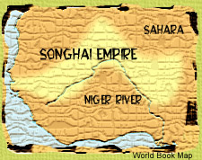

|
 After Sunni Ali's death, war broke out between two who desired his throne.
The first was Sunni Baru, Sunni Ali's son, who refused to accept Islam
completely. The other was Askia Muhammad, a general, who was more than
happy to declare himself the leader of the faithful. Despite having the
smaller army, Askia Muhammad triumphed and inherited Sunni Ali's great
empire.
Like many of the states in the interior of West Africa, much of Songhai's
power arises from its control of the caravan traffic across the desert,
especially the trade in gold and salt. But commerce alone does not give
this great state its power. Its rulers also have used slave labor to make
bountiful farms along the Niger River.
|